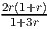
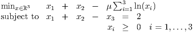
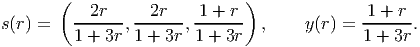
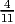
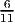

A painting company needs to decide on the number of painters it employs over the next 5 weeks. The company has estimated that the minimum number of painters it needs over the next 5 weeks is 4, 6, 7, 3, and 5, respectively. Painters can be hired or fired at the end of each week. However, whenever the work force size at the beginning of the current week exceeds that at the beginning of the previous week, a supplemental cost of $4 times the number of extra painters hired is incurred. On the other hand, if the work force at the beginning of the current week exceeds the minimum requirement, another supplemental cost is incurred, namely $3 times the number of painters over the minimum required for that week.
Use dynamic programming to determine the size of the work force at the end of each week that minimizes the total supplemental costs. You may assume the optimal solution employs 0 painters initially, 4 painters during week 1 and 6 painters during week 2.
Solution:
Let
At Stage n: choose number of painters at the beginning of week n.
The State at stage n is the number of painters xn-1 employed during the previous week.
Define
n = 5 :
Note that s = x4 ≥ d4 = 3 and x5 ≥ d5 = 5.

n = 4 :
Note that s = x3 ≥ d3 = 7 and x4 ≥ d4 = 3.
n = 3 :
Note that x3 ≥ d3 = 7 so we are forced to take x3 = 7.
Thus the optimal solution is x1 = 4, x2 = 6, x3 = 7, x4 = 5, x5 = 5.
The linear program
|
| (1) |
has dual problem
|
| (2) |
- (10 points) Let r > 0 and μ = . Show that x(r) := (1 + r, 1 + r, 2r) solves the barrier
problem
 (3) for any r > 0.
- (7 points) Find := lim r→0x(r). Use duality to prove that this limit point is optimal for (1).
- (8 points) Show that is not a basic feasible solution for (1). How can we have an optimal solution to the standard form problem (1) that is not a basic feasible solution?
Solution:
- For x(r) to be optimal to the barrier problem, need to find (y,s) with xisi = μ for each i = 1,…, 3. The
solution is
 - We get = (1, 1, 0). A dual feasible solution is y = 1, s = (0, 0, 1). The primal and dual solutions are both feasible and have the same objective function value of 2, so they are optimal to their respective problems.
- Any bfs to (1) has one basic variable, so at most one positive component. The point has two positive components, so it cannot be a bfs. There are multiple optimal solutions to (1), namely all convex combinations of the optimal basic feasible solutions (2, 0, 0) and (0, 2, 0). The point is the center of the optimal face for the primal LP.

Solution:
The vertices are ordered so that no edge points from a higher numbered vertex to a lower numbered one. Thus, we can first determine the longest path from node 4 to node 5, then the longest path from node 3 to node 5, then the longest path from node 2 to node 5, and finally the longest path from node 1 to node 5.
Let fn be the length of the longest path from node n to node 5. We have
There is only one arc leaving node 3, so we immediately obtain
We then get
and its successor is node 4. We can now get
and its successor is node 2.
Thus the longest path is 1 → 2 → 4 → 5, of length 13.
The optimal tableau for the LP relaxation of an integer program is
so the optimal solution to the LP relaxation is = (0, 0, 4.5, 0, 3.5).
Assume we branch on x3. Show that the optimal solution to the LP relaxation of the branch with x3 ≤ 4 is integral.
Solution:
We add the nonnegative slack variable x6 and the constraint x3 + x6 = 4, updating the tableau to
Pivoting on the x3 entry in the second constraint to recover a basis gives the tableau
We solve this problem using dual simplex. When pivoting on the third constraint, the minimum ratio test shows that x4 enters the basis, giving the updated tableau:
Thus the solution to the LP relaxation on this branch is x = (0, 0, 4, 1, 2, 0), with value 7. This solution is integral, as required.
Formulate the following fixed charge problem as an equivalent mixed integer program:
(You do not need to find the optimal solution.)
Solution:
Introducing binary variables z1 and z2 we can obtain the equivalent problem
If x1 = 0 we can take z1 = 0. If x1 > 0 then we must take z1 = 1 and pay the fixed charge of 2. The variables x2 and z2 interact similarly.
Solve the integer program
using branch-and-bound, solving the LP relaxations graphically. The problem is illustrated below. Note that = (7, 2) solves the initial LP relaxation.

Solution:
We branch first on x2.
- x2 ≥ 3 :

Optimal solution to the relaxation is x = (6, 3), so we can fathom by integrality, with a value of -12. - x2 ≤ 2 :

Optimal solution to the relaxation is x = (7.5, 2), with value -11.5. We can fathom by bounds.
Thus the optimal solution is x = (6,3), with value -12.